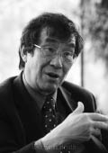

TU WEI-MING
Tu Wei-ming (doğum 1940) Çinli bir tarihçi ve filozoftur, yeni-Konfüçyüsçülüğün uzmanıdır. Ocak 1996'da Harvard'daki Yenching Enstitüsü'ne yönetici olarak atandı. Harvard mezunu olan Wei-Ming Princeton ve Berkeley üniversitelerinde Çin tarihi ve felsefesi dersleri verdi. 1981'den beri Harvard'da ders vermektedir. Uygarlıklar arası diyaloğu kolaylaştırmak amacıyla Kofi Annan ve BM tarafından davet edilen "Önemli Şahsiyetler Grubu" ve Amerikan Bilim Sanat Akademisi üyesidir. Araştırmaları Konfüçyüs hümanizmasına, Çin'in entelektüel tarihine, Çin'in felsefi geleneklerine ve Asya'nın dinsel düşüncesine yöneliktir. Tu Wei-Ming 2006 yılında Davos Ekonomi Forumu'na katılmıştır. Yazmış olduğu beş ciltlik Çin felsefe tarihi 2001 yılında Çin'de yayımlandı. İngilizce kitaplar da yayımladı. Bunlar arasında: Neo-Confucian Thought: Wang Yang-Ming's Youth; Centrality and Communality; Humanity and Self-Cultivation: Essays in Confucian Thought; Selfhood as Creative Transformation; Way, Learning, and Politics: Essays on the Confucian Intellectual; Confucianism and Human Rights; Confucian Traditions in East Asian Modernity: Moral Education and Economic Culture in Japon and the Four Mini-Dragons.

WEI-MING
Konfüçyüsçülükten yaratıcı bir dönüşüm süreci olarak söz ediyorsunuz. Bununla kast ettiğiniz nedir?
Konfüçyüsçü geleneğin temel kaygısı insan olmayı öğrenmektir, bütünüyle, eksiksiz insan, derinlikli insan. Elbette hepimiz buyuz, insan varlıklarız, ama diğer hayvanların tersine, kendi insanlığımız karşısında sahici olmayı öğrenmeye bilinçle çabalıyoruz. Genellikle insan olmayı öğrenme yönündeki bu Konfüçyüsçü yaklaşım bir tür toplumsal etikle, ötekiyle birleşerek ve yakınlardan, akrabalardan, anne babadan başlamak üzere, ardından erkek ve kız kardeşler, diğer aile üyeleriyle devam ederek, ilişkiler ağını genişleterek insan olmanın öğrenilmesi fikriyle özdeşleştirilir. Örneğin, bedenimiz bir gerçekleşmedir, edinimdir, ama onun sahibi değiliz: kendi bedenimiz oluruz. Kendimizi etnik düzlemde olduğu kadar etik ve dinsel düzlemde de ifade ederiz. Bu anlamda, ben, sürekli olarak bir dönüşüm sürecine dahildir ve bu dönüşüm pasif değil, yaratıcıdır.
Konfüçyüsçülüğü bir yaşam felsefesi olarak gösteriyorsunuz. Batılı ihtiyaçlara cevap verebilecek bir bilgi kaynağı olarak da gösterebilir misiniz?
Bir anlamda, bütün büyük etik ve dinsel gelenekler evrenseldir, dünya çapındadır. Karl Jaspers Hinduizm gibi eski uygarlıklardan söz eder. Biz buna Güneydoğu Asya'daki Caynacılığı ve Budizmi, Konfüçyüsçülüğü ve Taoculuğu, keza Çin'deki diğer tinsel gelenekleri ve Museviliği, Hristiyanlığı ve İslam'ı da ekleyebiliriz. Ayrıca sayısız yerli din geleneğini de sayabiliriz. Bunlar bütün olarak kabul edilen insanlığa anlam yüklü fikirler getirebilen, aynı zamanda tekil bir kültürel biçime derinden bağlı kalan akımlardır. Bu nedenle kültürel kimlik insan topluluğunun kimi özgül parçaları için çok önemlidir. Çeşitlilik de evrensellik de işlemektedir.
Konfüçyüsçülük, dünyanın ahlaki işlerine pratik katılımın sivil teolojisi ve toplumsal bir felsefe midir?
Soruyu başka türlü soralım: Burada söz konusu edilen hangi felsefedir? Felsefe, bilgelik sevgisidir, kendine dönük düşünmedir, terimin Yunanca anlamında kişisel bilgidir. Ama eğer bütün büyük etik ve dinsel gelenekleri dikkate alarak konuyu genişletirsek, o zaman felsefe bir yaşam tarzı ve biçimi olur. Bu nedenle, bir dizi tinsel egzersize ya da disipline içsel olarak bağlıdır. Böylece, Konfüçyüsçü gelenek dikkatini insanın çıraklık sürecine yöneltir, böylelikle bütün veçheleri kavrayabilir. Dili öğreniyoruz, yalnızca sözel dili değil, aynı zamanda beden dilini de, iletişim dilini, kendini kavrama dilini de öğreniyoruz. Hatta benlik kültürünün bedeni dönüştürerek onu benin estetik bir ifadesi haline getirdiği şeklindeki Konfüçyüsçü fikri düşünmeye kadar varırız. Başka deyişle, kendi fiziksel bedenimizi ritüel aracılığıyla, iletişim, tartışma aracılığıyla dönüştürürüz, böylece kendimizi estetik düzlemde ifade edebilir oluruz. Bu anlamda estetik, etik ve din, insan gelişiminin holistik sürecine dahil olur.
Konfüçyüsçülük ile örneğin Amerikalı filozof John Dewey'in pragmatizmi arasında bir yakınlık var mıdır? Çünkü Dewey, politik alan da dahil, Konfüçyüs'ün öğretilerini titizlikle öğrenerek eylemin niteliğine vurgu yapmaktadır.
Bu yakınlık gerçekten de güçlüdür, yalnızca John Dewey'in pragmatizmiyle değil, aynı zamanda sembolik eylem ya da simbiyotik sistem fikri nedeniyle Charles Peirce'ye özgü araçsallıkla da yakınlık vardır. Başka deyişle, insanlar aynı zamanda sembolik hayvanlardır. Onlar yalnızca işaret değil, derin bir anlam taşıyan sembollerdir. Ve bu tür etkileşim, bu tür pratik, bireye yardım etmeyi sağlar, yalnızca tek başına bir ritüel olarak değil, onu bir ilişkinin ortasına, benin başkalarıyla iletişiminin içine dahil ederek bunu yapar.
Geleneksel Konfüçyüsçülüğü çağdaş dünyanın felsefesi olarak kabul ediyor musunuz?
Konfüçyüsçülüğü yalnızca çağdaş kabul etmekle kalmıyorum, gelecek kuşaklara önemli bir esin kaynağı olmak için gereken potansiyele sahip olduğunu da düşünüyorum. Konfüçyüsçü mirası çok uzun bir tarihsel gelenek olarak görmek âdettendir. Hatta kimileri geçmişe ait basit bir yük olarak görürler. Onlara göre, başka düzende güçlerin yönettiği modern bir evreye gireceğiz ve bu evrede bu gelenek artık bir işe yaramayacak. Bununla birlikte, ben geleneğin dünyamızı ya da gelecekteki dünyayı anlamamızı sağlayan şey olduğu kanısındayım. Yaşayan bir geçmişe ihtiyacımız var, çünkü bu geçmiş kendimizi ve gelecek kuşakları anlamamızı sağlar. Bu nedenle, geçmiş, şimdiki zaman ve gelecek arasındaki bağlara dair açık seçik bir bakış açımız olmalıdır. Burada da sürekli bir hareketle karşı karşıyayız. Konfüçyüsçülük yalnızca çağdaş olmakla kalmıyor. Çağdaş sıfatı iki anlam taşıyabilir. Çağdaş, şimdiki zamanın sürekliliğini anlamaya yardım edebilir ya da tersine anlık olarak ortaya çıkabilir: Şu an doğru gelen şey, şimdiki zaman dışında hiç yarar taşımayacaktır. Bu anlamda ben Konfüçyüsçü geleneğe belli bir süreklilik, şüphesiz bir çağdaşlık atfediyorum.
Benlik kültürünün dinsel boyutu ateist felsefenin yeni bir boyutu mudur?
Karşılaştırmalı dinler incelemesinde, birçok tinsel geleneğin son derece dinsel olduğu kabul edilir, ama bazıları dinsel değildir, bunlar daha ziyade toplumsal alanda ya da politik dünyada kök salmışlardır. Konfüçyüsçülük ise genellikle seküler bir hümanizma olarak, yalnızca seküler dünyayla ilgili olarak tanımlanmıştır, hic et nunc [şimdi ve burada]. Gerçekten de Konfüçyüs'e ruhlar hakkında soru sorulduğunda şu cevabı veriyordu: "İnsanları anlayamıyoruz, ruhları nasıl anlayalım?" Ölüm konusu sorulduğunda ise, "Hayatı anlayamıyoruz, ölümü gerçekten nasıl anlayalım?" diyordu.
Kimi yorumcular, sanıyorum, niyetlerine aldırmadılar ve ölülerden çok canlılarla, ruhlardan çok insanlarla ilgilendiği sonucunu çıkardılar. Ben Konfüçyüs'ü okuduğum ve anladığım kadarıyla, burada şeylerin yüzeysel kavranışından kaynaklanmayacak, çok incelikli bir öğe görüyorum, yani yaşam kavranmadığında ölümü kavramak imkânsızdır. Başka deyişle, yaşamı ölüme duyarlılığın bir önkoşulu olarak anlamak gerekir ve tersine, yaşamı bütün anlamı içinde kavramak için ölümü anlamak gerekir. İnsan dünyasını anlayamazsak ruhları anlama iddiasında bulunamayız, ama insanları anlamak tinsel dünyayı kavramaya yardım edecek bir önkoşuldur. Dolayısıyla insanın bütünüyle kavranışı tinsel dünyayı tanımayı gerektirir. Ben Konfüçyüsçü geleneği bu anlamda temelden hümanist olarak, dinsel bir etik olarak algılıyorum ya da etik ve din ayrı ayrı eşit bir rol oynuyorlar. Ve bu çok geniş bir insan kavrayışıdır ve dört boyutu içerir: Ben, topluluk, doğa ve gök. Üç temel ilke işlemektedir ve bu dört boyutu onlar yönetir.
Karşılıklı olarak, topluluğun iyi niyetli desteği olmadan, bireysel itki batağa saplanır. Demek ki etkileşim için bir uzam vardır. Aynı zamanda, bütün olarak insan türü ile doğa arasında kalıcı biçimde uyumlu bir ilişki de gerekir. Terimin Konfüçyüsçü anlamında doğa, insana özgü konuttur. İnsan-merkezli kaygılarla şekillendirmek zorunda olduğu ve tanımadığı bir dünyaya fırlatılmış insan varlığının varoluşsal kaygısı burada yoktur. Bizler evrenin parçasıyız, tıpkı ağaçlar ve bitkiler gibi bu evrenin meşru üyeleriyiz. Sonuç olarak, insan kalbi ile göğün yolu arasında da bir ilişki vardır. Neyse ki bu ilişki karşılıklıdır, karşılıklı cevaplardan oluşur ve burada ve şimdi insan dünyası ile cennet arasındaki etkileşimi sağlayan da budur; bu cennet yalnızca doğaya indirgenemez, çok daha geniş bir evren anlayışının parçasıdır.
Konfüçyüsçülük, Batılı felsefelerin özü olan tekil ve tanımlı bir tarihsel irade içine dahil edilmiş bir Tanrı'ya inancın yokluğuyla nitelenmez mi?
Birçok insanın tektanrıcılığın Tanrı'sının olmadığını savunduğu doğrudur, eğer bütünüyle dünya dışı değilse ve eğer bu Tanrı dünyayı yarattıysa, bizler, onun yaratıkları, Tanrı'nın tasarladığı haliyle insan varlığının anlamına ne yolla olursa olsun erişmeye, zekâya, rasyonelliğe sahip değiliz, çünkü ilahi planın kapsamını ifade etme iddiası bizim tarafımızdan bir hakaret olur. Bununla birlikte, tektanrıcı gelenek derin bir anlam içerir, buna göre bizler Tanrı imgesine göre yaratılmışızdır. Haysiyetimiz, maneviyatımız Tanrı'nın lütfu ve sevgisinin etkisi altındadır. İnsan rasyonelliği bile değerlidir. Katolik teologlar, Tanrı'nın bir bağışı olan rasyonel söylem dolayısıyla dünyayı anlamaya çalışmak için büyük çabalar sergilediler. Konfüçyüsçüler de Konfüçyüs'ten bile çok önce gelen şu çok eski özdeyiş sayesinde, varlığımızın belli bir akıldan kaynaklandığına güçlü bir şekilde inanırlar: "Gök, kusursuz insanlar yaratır," ya da "Gök kusursuz insanlar doğurur." Yanlış anlaşıldığında tuhaf bir kavramdır, Konfüçyüsçü hümanizma açısından bir yanlış anlamaya varabilir. Bu anlamda, kozmosun yaratıcılığı, insanla alakası olmayan bu kişisiz dış güç olmasında değildir yalnızca. Bu yaratıcılık kişisel olmasa da son derece insanidir, çünkü yeni gerçekleri doğurur. İnsan varlıkları olarak bizler de bu sürece katılırız ve bizim yaratıcılığımızın kozmosun yaratıcılığıyla bir tür rezonansı nasıl inşa ettiğini algılamak bizim sorumluluğumuzdadır.
Konfüçyüsçülük yandaşları belki de aynı kişisel Tanrı anlayışına sahip değillerdir, çünkü kozmik bir sürece, cennet olarak tanımlanan bir aşkınlığa tepki gösterirler. Konfüçyüs der ki, eğer gökyüzü bu kültürün sürmesini arzuluyorsa, o zaman bana karşı kötü niyetle harekete geçen kişiler bana kötülük yapamayacaklardır. Burada bir misyon boyutu vardır. Bu anlamda, insan kültürü kozmik yaratıcılık eserini sürdürür. Dolayısıyla kozmos başlı başına bir yaratıcılık olarak kabul edilir ve insanın özdönüşümü bu kozmik sürecin devamını oluşturur.
Gündelik hayatta bilgeliğe erişme yolu olarak Konfüçyüsçülüğün metafizik boyutuna özel bir önem atfediyor musunuz?
Bu metafizik boyut, yaşamın anlamının yaşanan gerçekleri aşmasında mevcuttur. Doğal olarak, sizin seküler dünya dediğiniz şeyin içinde yaşıyoruz, ama bu dünyanın tatmin edemediği birçok tinsel gelenek dışarıda tinsel mabetler yaratıyorlar, kutsal yerler olan kiliseler, tapınaklar, sinagoglar ya da kutsal sandıklar ortaya çıkıyor. Konfüçyüsçüler bu yaklaşıma duyarlıdırlar, ama bir başka seküler dünya anlayışını kutsal olarak paylaşırlar. Bu dünyanın dışında tinsel bir mabet inşa etmek yerine, evreni insan ilişkileri, aile, dost ilişkileri, hatta politika ve toplumsal ilişkiler olarak kabul ederler. Dünyanın bütün bu boyutları sekülerlikten kutsalın alanına geçiş için dönüştürülebilir. Seküler olan kutsal kabul edilebilir, Konfüçyüsçü ritüel fikrinin kutsal ayinin yerini tuttuğu düşünülür.
Konfüçyüsçülük temelleri üzerinde dünya çapında bir felsefe kurmanın mümkün olduğu kanısında mısınız?
Sanırım evet. Ayrıca, bu işe kalkışmanın, bizlerin, Konfüçyüsçü geleneğe katılmış olanların sorumluluğunda olduğu kanısındayım. Başka deyişle, dünya topluluğuna kendi katkımızı sunmak istiyoruz, böylelikle yerel bilgiler, tarihsel, etnik ve kültürel büyük çeşitliklerine rağmen dünya çapında bir anlam edinirler. Bir tür Konfüçyüsçülüğe bağlı olan şey, yerel bir bilginin kapsamının dünya çapında olmasıdır. Bu eser, çoğulcu bir evren çerçevesinde anlaşılmalıdır. Dünya asla tümüyle Konfüçyüsçü, İslamlaşmış, Hristiyanlaşmış ya da Budist olmayacaktır. Yirmi birinci yüzyıl dünyası bir anlamda ikinci bir eksen-çağ'dır. İlk eksen-çağ, İsa'dan bin yıldan fazla süre önce, bellibaşlı dinlerin doğduğu ve bağımsız olarak geliştiği uzun dönemdi. Hristiyan dünyasındaki sayısız insan Hristiyan olmayan dünyayla ilişki kurmadan yaşadı. Japon Şintoizmi üzerinde Konfüçyüsçülüğün ve Mahayana Budizminin etkisini de unutmayalım.
Konfüçyüsçü ben'in doğasını da sorguladınız. Cevap bulabildiniz mi?
Ben sorusu son derece karmaşıktır. Yalnızca benliğin kimliği değil, insan deneyiminin çok sayıda boyutuyla ilgili olarak benliğin bilinmesi ve kavranması da gerekir. Ben Konfüçyüsçülüğü inceliyorum, ama aynı zamanda Mahayana Budizmini de inceliyorum. Yıllar boyunca bu çok güçlü Budist ben anlayışı beni cezbetti. Bu ben karma yapıdadır, birçok uyumlu gücü birleştir ve bu karma yapının ardında bir benin olduğuna inanmak yanılsamadır. Bizim benimiz yoktur. Hindu Ataman geleneğinde asıl ben Brahman'ın parçasıdır. Brahman ve Ataman okyanusa düşen bir su damlası gibidirler, damla bir kez düşünce okyanusun parçası olur. Hristiyan açıdan kimileri şunu soruyor: Ben ne oldu? Kişi nerede? Gerçekten de su damlası yok oldu. Buna karşılık, eğer ben kuvvetlerin bu bileşimi olarak anlaşılırsa, suya damla biçimini verirler ve bu damla bir kez okyanusa düştüğünde okyanus ben olur ve bu da Brahman ile Ataman'ın kaynaşmasıdır.
Konfüçyüsçü anlayışa gelince, benim kafamı çok karıştırıyor: Öncelikle, her insan varlığının önceden belirlenmiş bir yaşamı olduğu, bunun da toplumsal, politik ve kültürel bir geleneğe kök saldığı, buna dahil olduğu şeklindeki güçlü inancı ifade ediyor. Benin bu özgüllüğü biriciktir ve değiştirilemez, ikizlerde bile değişmez, onlar da dünyada iki ayrı konum işgal ederler. Benim ilksel bağlar dediğim etnik aidiyet, cinsiyet, doğum yeri, dil, toplumsallaşma biçimi, sınıf, yaş, temel dinsel yönelim de bu tikel öz çerçevesinde değişir. Bu bileşim, bu kümelenme öyle eşsizdir ki herkes özgüldür.
Konfüçyüsçülüğü ve Konfüçyüsçü bireyselliği özgün ve özgül bir süreç olarak mı kavrıyorsunuz?
Konfüçyüsçülüğü günümüz dünyasına katılmış canlı bir akım olarak kabul edersek, dünyaya aktif olarak dahil olmak ve dünyanın dışında tinsel bir mabede kapanmamak gerekir. Ama dünyaya bu katılım eleştirel bir bilinç gerektirir, çünkü bir tür statüko içinde seküler dünyanın parçası olmak arzu edilir bir durum değildir. Bu dünyayı değiştirmek gerekir, ama bunun da önkoşulu olarak kendini dönüştürmek gerekir. Bu açıdan Konfüçyüsçülük diğer büyük dinsel geleneklerden farklı değildir.
Bununla birlikte Konfüçyüsçülük, entelektüeller kamusal bir rol oynadıklarında asıl dönüşümün meydana geldiğini kabul eder. Ben burada modern bir kavram kullanıyorum ama bu Konfüçyüsçülüğün duyarlılığına derinden kök salmıştır. Bir topluluğun parçası olabilir, medyada, politikada, iş dünyasında, çeşitli toplumsal ya da dinsel örgütlenmelerde faaliyet gösterebilir. Ben dönüşümü yoluyla, bu kişi dünyaya dahil olarak bu dünyayı içerden dönüştürmeye çalışır. Bu, Konfüçyüsçülüğün içine derinden kök salmış bir inançtır.
Batı uygarlığının toplumsal dokusunu tahrip etmiş kökten bireyci eğilimler karşısında eleştirel misiniz?
Bu eğilimlere karşı eleştirelim ve yalnızca Batılı oldukları için değil, Güneydoğu Asya'yı ve dünyanın geri kalanını da istila ettikleri için. Bir Japon ifadesi var, shing shingi ya da shing shingshin, kitle iletişim araçlarının etkisi altında ortaya çıkan ve baskı gruplarının gücüne fazlasıyla bel bağlayan bu yeni kuşağı ve yeni insanlığı belirtiyor. Mensupları çok bireycidir, yeni bir türle özdeşleşirler. Bu görülmemiş durum pazar ekonomisinden kaynaklanıyor, bu kuşkusuz ki ekonomik gelişmenin yaşamsallığı açısından çok yararlı, ama başka düzlemlerde facia. Gerçekten de, bu kişisel çıkar kavramı, rasyonalitesi yalnızca kişisel çıkarıyla tanımlanan, tüm diğer sorumluluk biçimlerinin dışlanarak yalnızca düzenleyici kuralların yönettiği bir pazarda kendi kârını azamileştirmeye yönelmiş rasyonel hayvan olarak insan varlığı kavramı toplumsal dokuyu güçlü biçimde tahrip etti.
Bizler iki önemli krizle karşı karşıyayız: Kozmosla bağ kurmayı başaramadığımız için doğan ekolojik kriz ve aileden devlete dek bütün toplumsal cemaat bağlarının parçalanması. Dünya çapındaki kolektivitenin parçalanmasından söz bile etmiyoruz.
Her insan varlığının bu benlik dönüşümünü gerçekleştirme ve Buda ya da İsa kadar bilge olmaya yetecek içsel kaynağa sahip olduğuna inanıyor musunuz?
Konfüçyüsçü açıdan bu, görünüşte tamamen çelişik, ama insanlık durumunu anlamaya yardım edebilecek, çok güçlü iki kanaati karmaşıklaştıran bir sorudur. Bu iki kanaatten ilki, her insan varlığının Konfüçyüsçü anlamda bir bilge olmak için kendini gerçekleştirecek içsel kaynaklara sahip olduğudur. Bilge, insanın en sahici ve en samimi tezahürüdür, dolayısıyla bu bilgeliğe erişmek doğamızda vardır. Ama aynı zamanda, somut bir varoluşsal durumda, hiçbir insan, çabalarına rağmen bilge olamaz.
Varoluşsal durumda hiçbir insan varlığı kusursuzluğa erişemez. En yüksek düzeye erişilse bile daha iyi olacak bir yer hep vardır, çünkü bu düzeyi korumak, tıpkı müzikal virtüözlük gibi, büyük bir enerji seferberliği gerektirir: En iyi piyanistler sürekli egzersiz yaparlar. İnsan varlıklarının doğasını gerçekleştirmeye muktedirsek eğer, o zaman, şeylerin doğasını eksiksiz olarak gerçekleştirebiliriz; ve sonuçta gökyüzü ile yeryüzünün besleyici süreçlerinde ve dönüşümünde yer almayı sağlayan da budur. Ardından gökyüzü ve yeryüzüyle birlikte bir üçlem kurmayı başarırız ve bu üçlem fikri, kusursuzlaşan, bilge olan varlığa denk düşer. İdeal olarak, insanın antropolojik gerçekliğinde, herkes bu olanağa sahiptir, ama varoluşsal düzlemde süreğen bir kendini yetkinleştirme süreci söz konusudur. Ben bir bilgeyim, ben asla bir bilge olamam şeklindeki bu iki tutum insan potansiyelinin ve gerçekliğinin birbirinden ayrılmaz iki boyutunu yansıtır.
Konfüçyüsçülükte varlığın sürekliliği ışığında, ben ile gerçeklik, yaratıcı ile yaratı, kutsal ile kutsal olmayan, kültür ile doğa arasındaki bu dikotomiler dizisi ne anlama gelmektedir?
Konfüçyüsçüler gerçekten de bu interaktif, holistik, dinamik modele çok dikkat ederler. Yalnızca Konfüçyüsçü olmayan, aynı zamanda Taocu da olan klasik Çin düşüncesinde bu ying-yang modeli bir çatışmayı, bir gerilimi ve hatta çelişik ama aynı zamanda tamamlayıcı eğilimleri belirtir. Bu öğeler birlikte varolur, bir yang güç, yani eril güç ve ilke ile bir ying, yani dişi güç olmadan hiçbir gerçeklik varolamaz ve eril ile dişil arasındaki bu karşılıklılık yaratıcılıkta ve döllemede kendini gösterir. Bu etkileşim ve çatışma modeli tercih görür ve bu nedenle, bizim gözümüzde, birçok dikotomi dışlayıcı değil tamamlayıcıdır, örneğin kök ile dal arasındaki, iç ile dış, parça ve bütün, başlangıç ve son, yüzey ve derinlik arasındaki dikotomiler. Konfüçyüsçü açıdan, entegrasyona, birliğe varamayan dışlayıcı karşıtlıklardan ziyade, insanlık durumunun özünü bunlar belirtir. Dışlayıcılara göre yaratı asla yaratıcı olamaz, tin asla beden olamaz. Bu Kartezyen fikirdir, buna göre fizik zihin olamaz, kutsal kutsal-olmayan olamaz. Buna karşılık, Konfüçyüsçü gelenekte, bir kişi kozmik sürecin yaratısı olabileceği gibi, bu bedende bulunan kişi de insan çıraklığının yaratıcı dönüşümünün yaratıcısı olabilir.
Konfüçyüsçülük ne statiktir, ne mekanik, ne de analitiktir. Konfüçyüsçü kozmos yaşamın kendi kendini yaratma sürecidir. Oysa kozmos sonsuzca genişleyen bir sistemdir. Bu durumun Konfüçyüsçülükteki etkisi nedir?
Organik, holistik, dinamik temel olarak, yaratıcılığı dönüştürücü bu kozmos anlayışı yalnızca Konfüçyüsçü değil, aynı zamanda Çinlidir ve Taoculukta da bulunur. Evrenin bütün kipliklerinin birbirlerine bağlı olduğu yönünde güçlü bir inanç vardır, dolayısıyla varlığın sürekliliği nosyonu vardır. Bütün kiplikleri içinde evren, kayaları, ağaçları, hayvanları, ruhları kapsar. Hepsi organik bir bütün içinde birbirine bağlıdır, öyle ki kozmik yaratılış süreci bütün bu gerçeklikleri doğurur. İnsan varlıkları olarak bizler diğer hayvanlara, bitkilere, hatta kayalara, bütünün sürekliliği içinde bağlıyız. Bütün bu şeyler arasında, yaşamsal bir enerji ve kan bağıyla bir akrabalık vardır. Dünyada ya da kozmosta saptanan öğeler ne olursa olsun, derinlemesine gözlemlendiğinde, bunlar birbirine bağlıdır, aralarında moleküler bir ilişki olacaktır.
Sayısız şey içinde gökyüzü ve yeryüzüyle bir bütün oluşturan bedene dair Konfüçyüsçü bakış, benin eksiksiz gerçekleşmesinin insanlığın gökyüzüyle birliğine yol açması anlamında antropokozmik bir bakış mıdır?
Gerçekten de, Konfüçyüsçü gelenek sıklıkla antropolojik gelenek olarak nitelenir. İnsana, insanlık durumuna vurgu yapan bir felsefi antropoloji biçimidir. Kimileri bu vurgunun göğün ve aşkınlığın zararına olduğunu düşünürler. Kimi düşünürler, Konfüçyüsçü gelenekte her şeyin içkin olduğunu, aşkın hiçbir şeyin olmadığını ileri sürerler. Belli ölçüler içerisinde ben de bu tanıma katılıyorum.
Bunun üzerine derin bir din duygusu eklenir, çünkü gök doğurur ve insan tamamlar. Göğün açılımını tamama erdirmek bizim sorumluluğumuzdadır. Bu konudaki her aşağılama çok yanıltıcı görülebilir. Bizlerin yalnızca kozmik sürecin yaratıkları olmadığımız, bu sürecin bizi katılıma mecbur bıraktığı fikri de vardır.
Konfüçyüsçü etik, Batılı gelenekleri temelden dönüştürmüş araçsal rasyonelleştirme sürecine katkıda bulunuyor mu?
Modern Batı toplumunda çok güçlü olan, Max Weber'in kullandığı terimle araçsal rasyonalitenin eseridir bu. Bilim, teknoloji, politik kurumlar ve pazar ekonomisi varlıklarını ve modus operandi'lerini bu rasyonelliğe dayandırırlar. Ama bu rasyonellik bir yığın biçim edinebilir. Nihai amaçların rasyonelliği saf araçlarınkinden farklıdır. Araçsal rasyonellik, Batılı zihniyetler de dahil olmak üzere bütün sorumluluklar yelpazesi içindeki bir biçimden başkası değildir. Örneğin Yunan geleneğinde rasyonellik bilgeliğe, tekniğe, benlik bilgi ve kavrayışına bağlıdır. Yalnızca özel bir aygıta egemen olma yeteneği değil, başlı başına dış dünyaya egemen olma yeteneği de söz konusudur. Modern Batı'da bu rasyonalitenin şaşılacak başarısına rağmen, Batılı tinsel geleneklerin, Museviliğin, Hristiyanlığın, İslam'ın ve diğerlerinin, toplumsal istikrara ve insanın gelişimine uygun çevreye ihtiyacımız olduğunu hatırlatarak, bu özel düşünme tarzına çok güç sorular sorduklarını düşünüyorum.
Böylece, Konfüçyüsçü gelenek ötekine başlı başına bir amaçmış gibi davranma zorunluluğu üzerinde ısrarla durur, bu öğüt Kantçı buyruğa benzer: Ötekine bir amaca yönelik araç olarak değil, ama kendinde bir amaç olarak davranmak. Bu eğitime de uygulanır, benliğin gerçekleşmesi ve dönüşümü için eğitim. Bu düşünce rasyonel araçsallıkla çatışmaya girer, ama daha yaygındır. Araçsal rasyonelliğin düzgün olarak işlediği alanlara uyarlanabilir. Siz Dewey'den söz ettiniz, pragmatizm ve araçsallıktan; bazı amaçlara erişmek için en uygun araçları seçmek gerektiğini bilmek şarttır. Özgül sorunlara, özellikle ortak yaşamın ve politik ve toplumsal gerçekliklerin ortaya attığı sorulara cevap vermeyi bilmek gerekir. Bu düşünme alanları modern toplumun, demokrasinin ve pazar ekonomisinin işleyişi için mutlak anlamda temeldir. Ama aynı zamanda çok daha geniş bir evrenin, aile yaşamının, dostluğun, dinin, estetiğin, tinsel dönüşümün ve pazar ekonomisinin yönetmediği bütün insani iletişim biçimlerinin de parçasıdırlar. Toplumsal bir sermayeyi, kültürel bilgileri, tinsel değerleri ima ediyorum. Bu alanlar geliştirilmelidir, özellikle de Klasik Yunan ve Latin edebiyatı aracılığıyla.
Toplumu uyumlu kılmayı hedefleyen Konfüçyüsçü öğüt, John Locke'a göre özel mülkiyet, Adam Smiht'e göre kişisel çıkar ve John Stuart Mill'e göre özel yaşam fikri üzerinde temellenen Batı bireyciliğini düzeltmiş midir?
Locke, Smith ve Stuart Mill'in bu fikirleri Konfüçyüsçü evrene önemli bir meydan okumadır. Konfüçyüs yandaşları kişisel haysiyeti geliştirmede özel mülkiyetin önemini, ekonomik dinamizmde pazarın önemini ve kişisel hakların korunmasında özel yaşam duygusunun önemini anladılar. Konfüçyüsçüler Batılı düşünürlerden çok şey öğrendiler. Bu da onları, kolektif katılıma ve kamu yararına ayrılan yerin kişisel çıkara verilen yerden daha fazla olduğu kendi geleneklerini eleştirmeye yöneltti. Aynı şekilde, ekonomik dinamizmin zararına politik istikrara ayrılan yere fazlasıyla vurgu yapılıyordu. Batılı düşünürlerle ilişki, Konfüçyüsçü fikirleri yeniden formüle etmeyi sağlar.
Buna karşılık, yüz elli yıl sonra, pazar ekonomisinin büyük gücü, özellikle kişisel çıkar kaygısı, kamusal alanın zararına özel alanın ağırlığı, yalnızca kişisel ya da sınırlı grup çıkarları terimleriyle tanımlanmakla kalmayan, kolektivitenin, ulusun ya da bütün olarak dünya çapındaki topluluğun refahı anlamında da tanımlanan bir refah kavrayışını düşünmeyi gerektirir.
Konfüçyüsçü tinsel yönelimi nasıl tanımlıyorsunuz?
Tinsel sözcüğünün kullanımı dinsel varlığın çok daha geniş kavranmasıdır. Konfüçyüsçülük bir din midir? Eğer dini tektanrıcı üç geleneğe göre, Tanrı'nın ve bir kilisenin varlığıyla ve dinsel bir cemaatin üyesi olmak için inancı benimsemiş olma zorunluluğuyla tanımlarsak, Konfüçyüsçülük bu ölçütlere denk düşmez. Buna karşılık, dine daha geniş bir bakışımız varsa, bazı kısıtlamaları kaldırmak istiyorsak, o zaman Konfüçyüsçülük bu dinin parçası olmalıdır. Birçok insan hümanist bir anlayışa katıldığını düşünmektedir, ama bu Konfüçyüsçü hümanizmanın özelliği, çok açık olmak, aşkın boyutu gözardı etmek ya da önemsememektir. Göğün önemi üzerinde güçlü bir şekilde ısrar eder. Başka deyişle, Konfüçyüsçü gelenekte insanlığın en yüksek tezahürü insanın gökle eksiksiz kaynaşmasıdır. Çinliler buna chenyengi derler; gökle insanın birliği, karşılıklılığı. Bu tin anlayışı insanlık durumuna kök salmıştır, dolayısıyla insanı hiçbir şekilde yadsımaz. Nietzsche'nin İnsanca, Pek İnsanca'sından tamamen farklıdır. İnsanın göksel doğasında, dönüşüm ve yaratıyla donanmış doğasında yatan gerçek insan haysiyetinden kaynaklanır. İnsanın anlamı tinsel bir boyuta sahiptir ve eşzamanlı olarak bu tinsel boyut yalnızca soyut bir fikir değildir, insan projesi içinde cisimlenir, burada ve şimdi dünyada demir atmıştır.
Konfüçyüsçülükte entelektüel sezginin rolü nedir? Ezoterizme ve irrasyonalizme değil de, benliği tanımanın yüce değerine ve tefekküre mi bağlıdır?
Bu entelektüel sezgiyi Kantçı ifade edilişine taşırsak, Alman filozofun insan varlıklarının analiz yoluyla anlayamayacaklarını, yalnızca fenomenleri ya da görünümleri inceleyebileceklerini vurguladığı görülür. İnsanlar kendinde şeyi anlayamazlar. Bu kendinde şey, insan rasyonelliğinden sonsuza dek gizlenmiş kalır. İnsan yalnızca şeyin yüzeysel yapısını kavrayabilir, derin yapısını değil. Bu anlamda, insan varlıklar kendilerini anlayamazlar, hiçbir insan varlığı kendindeki insan doğasını kavrayamaz. Buna karşılık, Konfüçyüsçüler, Budistler ve Taocular, göksel bağış olarak insan kavrayışında kök salmış olan kendini bilme olasılığına bu derin inancı paylaşırlar.
Burada farklı biçimde bir kavrayış söz konusudur; yalnızca iş zamanına, matematik bir formüle, teknik bir soruna uygulanan bir bilgi değil. Bu bilgi yalnızca bir düşünme değildir, bir tefekkürdür, bir nesneye dönük meditasyondur. Bilginin kendisi süreç içinde kişiyi dönüştürür. Bu dönüştürücü bilgi, cisimleşmiş, beden bulmuş bir bilgidir.
Çin uygarlığı üzerinde çok çalışmış olan büyük araştırmacı Joseph Needham, yüksek bilgelik ile insan rasyonalitesi arasındaki kopukluktan söz eder. "Organik bakış açısı" kavramı onundur. Bununla kastettiği nedir?
Needham Taoculuktan fazlasıyla etkilenmişti. Kendisinin Taocu geleneğin "onursal üyesi" olarak kabul edilmesinden mutlu olacağını belirtmişti. Çin ve Taocu kozmoloji konusunda sözünü ettiği ve Konfüçyüsçülüğün paylaştığı şey, yaratıcısız, düzenleyicisiz, kendi kendini yaratan evren fikridir. Bu dünya böyle işler, evrimci bir perspektif içinde, hem çokboyutlu hem de bütünsel bir dünya. Dünyayı bir makine gibi değil, kendisi biyo-kimyacı olduğundan, kendiliğinden yaratıcılığın organik açılımı olarak kabul eder. Bu nedenle dünya düzenleyici olmadan düzenlenebilir. Dünya, kusursuz biçimde koordineli bir yaratıcılık sürecinin sonucudur. Bu evrimci süreç dünyanın, organik bir bütün gibi, akışkan ve kendiliğinden işlemesini sağlar.
Konfüçyüsçülük içinde din ve felsefe fikrini Batı geleneğindeki din ve felsefe fikirlerinden nasıl ayırt ediyorsunuz?
Bir Batı felsefesi tarihi yazılırken, Yunan geleneğinin büyük şahsiyetlerini zikrederek başlanır, Ortaçağ geleneğinden Aquinolu Aziz Thomas ve Aziz Augustinus gibi birkaç isim, ardından modern döneme varılır, analitik gelenekle birlikte, Kant ve Hegel gibi filozoflar sayılır. Ardından, Batı dininin bir tarihi yazılsa Musa ile başlanır, İsa ve Martin Luther, Kierkegaard ve bir miktar din düşünürü ile sürer. Bu iki tarih karşılaştırıldığında, birbirlerini tamamlayıcı oldukları görülür ama çok farklıdırlar. Kimileri, biraz fazla basitleştirerek, felsefenin rasyonel anlayış üzerinde, analitik yöntem üzerinde fazla ısrarla durduğunu, her öncülün muhakkak doğrulanıp eleştirel analizden geçmesi gerektiğini, oysa ki dinsel geleneğin inanca, müminler cemaatine ve geleneğe vurgu yaptığını söyleyeceklerdir. Buna karşılık bir Çin felsefesi tarihi ve bir Çin din tarihi yazarsanız, egemen figürler aynı olacaktır. Bu nedenle belki de tuhaf bir şekilde felsefe ile dini birleştiriyorum. Başka deyişle, felsefi düşünme dinsel katılımla ya da dinsel cemaat inancıyla asla çatışmaz. Batı'nın Yunan ve Yahudi-Hristiyan geleneğinin gerçekleştirdiği ayrım Batı'ya özgüdür ve Hindu, Budist, Konfüçyüsçü ya da Taocu dünyada doğrulanmaz. Bu anlamda Konfüçyüsçü gelenek felsefeden olduğu kadar dinden de kaynaklanabilir. Aslında, ne dinseldir ne felsefi, çünkü bu da Batılı bir ayrımdır, aynı anda ikisi birdendir.
Geleneksel Konfüçyüsçülük ile Budizm, maneviyat ile maddiyat ikiliğini paylaşmaz mı?
Mahayana Budizm geleneğinde ve Konfüçyüsçülükte gerçekten de maddiyat ile maneviyat arasında net bir ayrım vardır ve bu aydınlatmaktan çok şaşırtır. Bu, kısmen, ikili bir evrende işleyen ruh ile madde, seküler ile kutsal, beden ve ruh, yaratıcı ve yaratık arasındaki dikotomi dizisine bağlıdır.
Buna karşılık, Konfüçyüsçülük geleneğinde beden hem kutsal değildir hem de kutsal; tabii eğer dünyayı, yeryüzünü zaten aziz kabul ediyorsak. Budizm, yanılsamadan başka bir şey olmayan sonsuz doğum ve ölüm döngüsü samsara dünyası karşısında fazlasıyla eleştireldir ve öte yakada bulunan dünya olan tinsel krallık dünyasını tercih eder. Zen Budist ya da Mahayana gelenek, burada ve şimdi dünyanın dönüşümüne vurgu yapar ve Samsara'nın Nirvana'ya dönüşebileceğine inanır. Bu fikir seküler ve kutsal fikriyle karşılaştırılabilir, ama burada beden, ruhun hapishanesi olmak yerine, tersine, ruhun ve tinin gerçekleştiği alan olabilir. Bu anlamda, zihinsel ile fiziksel arasındaki, maddi olanla manevi olan arasındaki etkileşim sürekli beslenir. Klasik Çin fikri olan chi ya da qui, maddi güç, psikofizyolojik madde, dünyanın bu yaşamsal enerji tarafından yaratıldığını ileri sürer.
Sezgisel bilgelik ve ikici olmayan bilgi tarafından da...
Gerçekten de, tin ile madde arasındaki ayrım artık yoktur, çünkü artık neredeyse dünyanın hiçbir yerinde buna rastlanmamaktadır; ama hiç tini olmayan, hiçbir maneviyatı olmayan ölü maddeye ya da maddi biçimi olmayan, tamamen maddiyattan yoksun tine rastlanabilir. Örneğin bir masa ya da bir çakıltaşı maddi ya da istatistiki basit kendilikler değildir, süreğen olan dirimsel enerjinin tezahürleridir. Bu, dünyada hiçbir şeyin istatistiki olmadığını, her şeyin dönüşüm halindeki varoluş olduğunu, uzun bir tarihsel perspektif içinde her şeyin duygu olduğunu ileri sürmek demektir. Çakıltaşı, enerji alanlarının toplaşmasıdır ve bu nedenle taşların farklı maneviyat derecelerinden söz edilebilir. Tuğlanın belki akik ya da yeşimtaşı kadar maneviyatı yoktur, bunlar, içsel yapılarıyla, kendilerini insana bağlayan belli bir tinsel güç içerirler.
Cemaat duygusu benliğin ahlaki ve manevi gelişiminde, Konfüçyüsçü düşüncenin gerçekleşmesinde temel önemde midir?
Cemaat fikri, öncelikle, kişinin asla bir ada olmadığı, bir ilişkiler merkezi, süreğen bir akış olduğu inancıyla doğrulanır. Bu haliyle, bir yığın başka akışla ilişkiyle girer ve bu da bir cemaat oluşturur. Doğal olarak, bizim tercih ettiğimiz cemaat güven cemaatidir, ben bunu sadakat cemaati olarak adlandırıyorum, toplumun temel değerleri karşısındaki sadakat yükümlülükleriyle kurulmuştur. Bu anlamda bir kişi tek başına ayakta duramaz. Yalnız yaşarsa, morali bozulur, insan varlığı olarak yoksullaşır. Toplama kamplarında altı yaşından küçük kimi çocukların, beslenmeleri ve maddi koşullarının kimi başka yanları uygun olsa bile kaçınılmaz olarak öldüklerini öğrendim. Bunun nedeni, kısmen, kimsenin onlara göz kulak olmamasıydı, karşılıklı bakışmadan, hiç kucaklanmadan, özen görmeden yaşıyorlardı, kimse onlarla konuşmuyordu, onları öldüren bu sessizlik ve bu tecrit oldu. Buna karşılık, on yıllar boyunca yalnız yaşayan kişiler vardır, ama bunlar çok daha yaşlı insanlardır, başkalarının dokunuşlarının, onlarla iletişimlerinin anısını hâlâ taşırlar ve dış dünyayla temas halinde yaşamış olduklarını hatırlarlar. Bir cemaatin parçası olma ve bu cemaati genişletme duygusu, insan varlığının hayatta kalmasının ve gelişmesinin kesinlikle temelidir.
Çin kozmolojisinde herhangi bir yaratılış miti var mı?
Tartışmalı bir konu bu. Çok provokatif makaleler yazılarak, yaratılış mitinin yokluğunun Çin kozmolojisinin ayırt edici bir özelliği olduğu ileri sürüldü. Bunun tersine, birçok yazar bütün Çin tarihi boyunca bu türden mitlerin varlığını ortaya koydular. Dolayısıyla bir eksiklik söz konusu değildir. Çin kozmolojisinin ayırt edici özelliği, böyle bir mitin olup olmadığı sorusudur. Egemen olan, varlığın sürekliliği tezidir. On yedinci yüzyılda bir düşünür, Konfüçyüsçü düşünce tarzının karakteristik özelliği olan ve aynı zamanda Çin kozmolojisini de ilgilendiren şu gözlemde bulundu: "Dünyaya evrim sonucu geldiğimizi hayal edelim. İnsanlar, bu durumda, çok uzun bir zaman süresince birçok evrede gelişim göstermişlerdir. Gökyüzü ve yeryüzü bizim ana babamızdır. Böylece, bitkiler, ağaçlar, hayvanlar da kuzenimizdir." İnsanın ortaya çıkışına katkıda bulunmuş olan sürecin parçasıdırlar.
Çin fikir tarihinde ya da düşüncesinde Batı metafiziğinden belirgin biçimde ayrılan gerçek bir metafizik var mıdır?
Çin'de bütün fikir tarihi Batı düşüncesinin tarihinden temelde farklılaşır. Metafizik, fiziğin ötesindeki bir düşünce tarzıdır, çoğu zaman da asla kanıtlanamayan tefekkürcü bir düşünme biçimine bağlıdır. Bu nedenle kimileri bu düşünce tarzının, şiir gibi, gerçek olmayan bir dünya olasılıklarına dair hayalgücü gibi, hipotezden kaynaklandığını ileri sürerler. Bu, Batı'da zorunlu bir entelektüel egzersizdir. Bizim Çin'de spekülatif düşünmeye dair benzer örneklerimiz çok sayıdadır. Bununla birlikte, Konfüçyüsçü gelenekte çıkış noktasını oluşturan şey, bireylerin yaşanmış deneyimidir. Dolayısıyla yaşam üzerine, insan varlığının anlamı üzerine ve insanlık durumu üzerine bir düşünme söz konusudur. Bu basitçe dünyanın üzerine konmuş metafizik bir düşünme değildir. Gerçekliğin ne olduğu üzerine bir ontolojinin, bir düşünmenin ya da kozmosun nasıl var olduğuna eğilen bir kozmolojinin varlığını ileri sürersek, bu düşünmeler çıkış noktasını aldıkları dünyanın içindeki yaşam deneyimlerine bağlıdırlar. Dolayısıyla bir anlamda yalnızca spekülatif düşüncenin yarattığı metafizik sistemler değildirler. Bu anlamda felsefenin, bir dünya görüşünü temsil eden insani sezgiler üzerine bir dizi homojen düşünmeden oluştuğunu söyleyebiliriz. Bu dünya görüşünün kozmolojik bir anlamı var, kendi tarzında bir ontolojidir.
Analitik kesinlik yokluğu hayalgücü zenginliğiyle mi telafi ediliyor?
Elbette, ama analitik kesinlik ile metafizik zenginlik arasındaki belirgin ayrımın belki de burada işlemediğini söyleyebilirim. Daha ziyade, verimli bir muğlaklıktan, kasıtlı bir hedefin, her şeyi en ufak ayrıntısına kadar kurallara bağlamaya çalışmama hedefinin sonucundan söz edebiliriz. Amaç, deneyimden titizlikle düzenlenmiş bir sistem çıkarmak değildir, bundan somut bir yaşam beklemektir; böylelikle, kapalı ve sınırlı bir sistemin yokluğunda bile, daha fazla boyut keşfedilebilecek daha zengin bir holistik anlayışa göre düşünmeye devam etmeyi sağlar. Bu süreğen bir açılım sürecidir.
Konfüçyüsçülük bir toplumsal etik biçimi midir?
Evet, çünkü toplumsal katılıma bağlıdır. Biz bir etik sorumluluk nosyonuna sahibiz, kimi zaman bu, nihai amaç etiği kadar, hatta daha da önemli kabul edilir. Konfüçyüsçüler istenç saflığıyla ilgilenirler. Bizim edimlerimiz, bir amacın araçlarından ziyade, kendinde bir amaç üzerinde temellenmiştir, ama bu edimlerin toplumsal sonuçları sorumluluk çerçevesine dahildir. Elbette ki, olumsuz ve iradedışı sonuçlarla daima karşı karşıya geliriz, bunlar bizim niyetlerimizden değil, olgulardan kaynaklanır. Bununla birlikte, bu anlayış içerisinde, birey sorumlu tutulur, bu alanda bile.
Kasıtlı kolektif edimin bir önemi var mıdır?
Gerçekten de, toplumsal etiğin kolektif bir edim olması anlamında. Başka deyişle, kendini gerçekleştirmek kolektif bir edimdir ve büyük bir öğrenimdir. Herkes, imparatordan, Göğün Oğlu'ndan sıradan insana dek, benlik kültürünü temel ve kök olarak kabul etmelidir. Toplum insanın gelişmesi için yaratılmış kabul edilmelidir. Bireylere yalnızca terimin ekonomik anlamında varolma ya da politik düzlemde güvenlikten yararlanma imkânı getirmekle kalmaz, etik ve dinsel anlamda genişleyen bir çevre de sunar.
Çin estetiğinin kapsamı nedir? Çin uygarlığı için anlamı nedir?
Modern düşüncede birbirinden açık seçik ayrılmış üç alanı biliyorsunuz: Estetik, etik ve din. Konfüçyüsçü düşüncede bunlar birbirine bağlıdır. Bedenin duyumsallığı toplumsal eylem ve katılımın temelini oluşturur. Etik algının nihai kaygılara uzanması etiğin tam anlamıyla gerçekleşmesini sağlar. Estetik, bir yandan, etiğin temeli olarak, doğanın, temel güzellik duyumunun estetik algısı kabul edilebilir, ama aynı zamanda etiğin en yüksek tezahürüdür. Konfüçyüs insanın kalbinin buyruklarını, doğru olanın sınırlarını ihlal etmeden izleyebileceğini söylüyordu. Benim ne olduğum ve ne olmam gerektiği, kendiliğinden bir bütünün içinde kaynaşır ve estetiğin bu anlamı da anlam yüklüdür.
Çin kozmolojisinde insan haysiyetinin yeri nedir?
İnsan haysiyeti insan varlığının içkin bir değeridir, gök tarafından verilmiştir. Bu özdeyiş seçkilerde yer alır: Üç ordu komutanlarından yoksun bırakılabilir ama insan iradesinin çoğundan yoksun bırakılamaz. Birey harekete geçmeye bir kez karar verdiğinde, bu karar bile bir dönüşüm eylemidir. Hristiyan düşüncesinde birey, konumuna, iktidarına ve etkisine rağmen saygı görmelidir çünkü Tanrı'nın imgesinden yaratılmıştır. Fakat Konfüçyüsçü düşüncede birey, göksel ilkenin cisimleşmiş hali ya da tezahürüdür. Bireyin doğası gökyüzü tarafından ona verildiğinden, yalnızca toplumsal cemaatin meşru üyesi olarak değil, insan ilişkilerinde göksel ilkenin açıklanışı olarak da saygı görmelidir.
Konfüçyüsçü ben ve birey kavramları devlet ve toplum karşısında hangi konumdadır? Özdisiplin bir yönetim tarzı mıdır?
Büyük öğreti bize dışsal gerçekleştirme ve içsel disiplinle ilgili çok ilginç bir şey öğretir. Şöyle ifade edilir: Ailevi düzenlemenin temeli kişisel yaşam kültürüne dayanır ve eğer aile düzendeyse, o zaman devlet yönetilir ve evrensel barış gökte hüküm sürer. Birleşmiş Milletler'in rollerini gerektiği gibi yerine getirdiklerini söylemek her üye devletin iyi yönetildiği anlamına gelir. Ve bu devletlerden her biri iyi yönetilir çünkü her devletteki aileler iyi yönetilir, çünkü bu ailelerin üyeleri belli bir uyum biçimine erişmiş olur. Oysa, kişi kültürü kendi zihniyetini düzeltebilme olasılığına dayanmaktadır. Bu zihniyet düzeltimi onların samimi ve özgün iradelerinin ürünüdür ve bireysel bilginin genişlemesi yoluyla gerçekleşir, bireysel bilgi de şeylerin anlamının araştırılmasına, değerlendirilmesine ve kavranmasına dayanır. Bu içsel uyum süreci, denge amacıyla varlığın kimi derin kaynaklarının gelişimi, adil toplumsal eylemin, devletlerin yönetiminin ve evrensel barışın temeli olarak hizmet görür.
İstisnai bir teolog olan Reinhold Niebuhr, ahlaksız bir toplumun bağrında ahlaklı kişilerin, ahlaklı bireylerin varlığından söz etti. Konfüçyüsçü anlayışa göre, ahlaklı bireyler, toplumu dönüştürecek düzeyde konumlanmalıdır, böylelikle toplum ahlaksızken ahlaklı olur. Bu anlayış, bireyler ne kadar nüfuza, iktidara sahipse, enformasyona, mallara, fikirlere erişim imkânları ne kadar çoksa, toplumu düzene koyma yükümlülükleri o kadar fazla olur şeklindeki güçlü inanca dayanmaktadır. Bu onlara kendini dönüştürme teşebbüsünde daha titiz görünmeyi dayatır.
Çin uygarlığının özgül işaretleri olarak haklar, sorumluluklar ve görevler arasında nasıl bir ilişki görüyorsunuz?
Kısa süre önce, Harvard'da, akıl ve ahlak üzerine bir ders çerçevesinde, birinci sınıf öğrencilerine Konfüçyüsçü hümanizma, benlik kültürü ve ahlaki cemaatin anlamı üzerine dersler verdim. İki temel değerler kategorisi arasında, bunları öncelik sırasına göre hiyerarşileştirerek tercih yapmalarını istedim. Öncelikle rasyonalite ile sempati arasında, sonra yasa ile ritüel arasında, haklar ile sorumluluk (ya da görev) arasında, birey olarak kişi ile ilişkilerin merkezi olarak kişi arasında ve son olarak da kişisel sorumluluk nosyonu ile toplumsal dünyaya katılım nosyonu arasında seçim yapmalarını istedim. Haklar ve sorumluluk üzerine bu dersi sekiz yıl kadar önce bana verdiklerinde öğrencilerin çoğu hakları sorumluluktan ya da görevden daha önemli olarak görmüştü. Buna karşılık, bugün, durum tersi.
Bu tercihler Amerika Birleşik Devletleri koşullarında geçerli. Ama Çin koşullarında sorumluluk ve görev, hakların uygulanmasının önkoşulu olarak kabul ediliyor. Sorumluluk, özellikle görev duygusu, yalnızca gençlerin yaşlılara karşı, periferinin iktidar merkezlerine ya da halkın hükümete karşı sorumluluğu değil. Bu aynı zamanda kültürel ve politik elitin de görevi. Konfüçyüsçü gelenekte, halkın hakları nosyonu elitin görevleri nosyonundan çıkarsanabilir. Elit bütün olarak halk üzerinde engin bir iktidara sahip olduğundan, elit bazı görevleri halka karşı olduğundan çok kendi kendine uygulayabilmelidir. Dolayısıyla, toplumsal istikrarın korunmasına göz kulak olma yükümlülüğü daha fazladır. Bu açıdan, hak bilinci klasik Konfüçyüsçülükte asla gelişmemiş olsa da, bir halkın saygı görmeye hakkı olduğunu ileri sürebiliriz, çünkü elinden alınamaz haklara sahiptir ve buna göz kulak olmak devletin görevidir, özellikle güçlü devletlerin, yoksa sorumluluklarını yerine getiremezler.
Günümüzde Çin'de insan hakları sorunu gündeme geliyor. Bu haklar, bireysel haysiyet anlamında, Konfüçyüsçülükle bağdaşır mı?
Konfüçyüsçülük bireysel haysiyetle tamamen uyuşur, ama hak bilinci Batı'da çok uzun bir dönemde gelişmiş bir söylemdir. Birleşmiş Milletler'in birinci İnsan Hakları Evrensel Bildirgesi'ni 1948 yılında ifade ettiklerini hatırlayalım. Birçok hak tanımlandı, yalnızca politik haklar değil, ekonomik, sivil ve kültürel haklar da. Konfüçyüsçü kimi düşünürler bu bildirge metninin özgün yazılımında yer aldılar. Konfüçyüsçü fikirler bu belgeye dahil edildiler. Konfüçyüsçü hümanizma ile bu bildirge arasında temel bir uyuşmazlık ileri sürmek doğru olmaz.
Bununla birlikte bu soru, insan haklarının üç katmanı olduğundan karmaşıktır: Politik haklar, sosyo-ekonomik haklar ve cemaat ve grup hakları ya da kültürel haklar. Öncelik hakkı hangi katmanın olmalıdır? Çin politik hakların önüne ekonomik hakları çıkarıyor. Ama sanıyorum ki, bu sorunu ele alma tarzı ne olursa olsun, her uygar hükümet bazı temel kurallara uymalı, yargılamadan insanları tutuklamayı, politik muhaliflere işkence yapmayı ve onlara adli suçlu muamelesi yapmayı kendine men etmelidir. Modern dünyada bunlar kabul edilebilir değildir.
Çin'in bugünkü durumu buna denk düşüyor mu?
Bence bu nosyonlar Konfüçyüs geleneğiyle uyum içindedir. Çin'de politik rejim ekonomik hakların en önemli haklar olduğunu desteklemektedir. Bu rejim kuşkusuz ki insanların geçinmelerini sağlayacak bazı temel ekonomik hakları güvence altına alabilir. Bunun karşılığında, ifade ya da toplanma özgürlüğü gibi kimi başka hakları kısıtlıyor. Bunun kategorileri kötü kullanmak olduğunu düşünüyorum, çünkü beslenmek yetmez, kişisel olarak zenginleşmek de gerekir, bir bütün olarak ele alınan insani gelişme için bir eğitim rolünü üstlenebilmek de gerekir. Dolayısıyla hükümet, her uygar hükümetin temel kurallarından bazılarına saygı göstermek amacıyla kendini disipline etmelidir. Çin bu alandaki bütün anlaşma ve sözleşmelere imza atmıştır, oysa Amerika Birleşik Devletleri bunları imzalamamıştır. İmzalamak kuşkusuz ki bir iyi niyet edimidir, geriye uygulamaya koymak kalır. Çin henüz burada değil ve bu noktada birçok başka ülkenin çok gerisinde bulunuyor. Çin'in bunu öğrenmesi, hükümetin bireylerin temel haklarına saygı göstermeyi öğrenmesi şarttır.
Tibet'teki durumu nasıl değerlendiriyorsunuz?
Bu durum iyi değil, düzelmesi gerek, bu da zaman alacak. Anlayışsızlık korkunç, eğitimin olumlu bir gelişmeye imkân tanıyacağını bilsek bile dönüşüm uzun ve yavaş olacak. Çin, yalnızca hükümet değil, kültürel seçkinler de sıkı sıkıya ekonomik ve teknolojik gelişme terimleriyle tanımlanmış modernleşmeyi kafaya takmışlar. Bu nedenle Çin tanım gereği karmaşık olan kültürel bir alanda olup bitene tamamen duyarsızlaşmıştır. Tibet Çin'in bilmediği bir kültür ve geleneğe sahip. Değişim Hindistan'ın dikkate alınmasından kaynaklanabilir, Çin Hint kültürünü referans alarak değerlendirmeye başlıyor.
Eğer durum böyleyse, Çinli yöneticiler ve seçkinler kültür odağı olarak Tibet'e ve Dalai Lama'ya duyarlı olacaklardır, ama güçlü bir Çin-karşıtı duygu uyandırmış olan tamamen politize bir ayrılıkçıdan ziyade, ermiş bir insana dikkat etmelidirler. Bizim hükümetimiz Dalai Lama'ya ve Tibet'e karşı milliyetçi argümanlar kullanmakta haksız. Batı'da olduğu kadar Doğu'da da bu kültürün getirdiği zenginleşmeye daha duyarlı olmalı. Bu kültür Çin düşüncesinin dünyayı kavramasını sağlayan değerli Çin mirasının ve çoğulculuğunun parçasıdır. Bunu denetlemeye çalışmak yerine, Çin, Tibet kültürünü serbest bırakarak kazanacaklarını anlamalıdır.
Çin'in kültürel geleneğinden kaynaklı, dünyaya verebileceği hümanist mesaj nedir?
Bu son yıllarda medeniyetler arasında diyalogla fazlasıyla ilgilendim. Medeniyetler çatışması nosyonu karşısında son derece eleştirelim. Medeniyetler arasındaki bu diyalogta çok farklı iki yaklaşım söz konusudur ve bunların her ikisi de anlam taşır. Birincisi insanın hayatta kalmasının asgari koşullarını sağlamayı hedeflemektedir ve dinler arasındaki bütün temel karşıtlıkları aşar. Hans Küng, daha önce sözünü ettiğimiz iki temel ilkeye dayanan bu yaklaşıma derinden katılmıştır. Bu ilkelerden ilki, "sana yapılmasını istemediğin şeyi başkasına yapma"dır, ikincisi ise her bir kişinin, her bir ülkenin bir amaca hizmet eden araçlar toplamı olarak değil, kendinde bir amaç olarak kabul edildiği insanlık ilkesidir. Ama bu asgari gereklilik azami ölçüde gerçekleşerek büyümelidir. Başka deyişle, başkasının yaptığına değer veriyorum çünkü karşılıklı olarak kötülük yapılmayan, kimsenin birbirini öldürmediği bir durumla yetinmek yetmez; çünkü insan topluluğu için de bir özlemi paylaşmak önemlidir, böylelikle birlikte gelişebiliriz.
Nasıl gelişilir? Bunun için çeşitliliği ve çokluğu kucaklamak gerekir. Zararlı göreceliliklere ya da radikal başkalık şeklindeki bir o kadar tehlikeli nosyonlara müsamaha göstermemek gerekir. Ötekine geniş bir saygı göstermek, din ve görececilik tuzağına düşmeden kültürel çeşitliliğe ve çoğulculuğa duyarlı olmak gerekir. Buna erişmek için, diyalog, tartışma, müzakere yoluyla kesintisiz bir iletişim ağı kurmamız gerekir.
Bu açıdan, Konfüçyüsçü gelenek ilginç bir rol oynayabilir. Hristiyanlarla, Müslümanlarla, Konfüçyüsçülerle, Yahudilerle ve hatta Marksistlerle, dinlerarası, etik ve dinsel sayısız diyaloğa giriştim. Bu karşılıklı alışverişler Konfüçyüsçü adının bir sıfat da olabileceğini anlamamı sağladı. Müslümanlarla Yahudiler arasında diyalog olduğunda, birbirlerinin kim olduğunu anlarlar. Budistler ve Hristiyanlar arasında da durum aynıdır. Buna karşılık, Konfüçyüsçüler kendi durumlarıyla ender olarak özdeşleşirler. Onlar Konfüçyüsçü Hristiyandır, Konfüçyüsçü Müslümandır, Konfüçyüsçü Budisttir. Aidiyetleri daha da karışıktır. Kendilerini böyle takdim ederler (örneğin Konfüçyüsçü Hristiyan) çünkü bunu yaparak politik ve toplumsal bir yükümlülük, kültürel bir duyarlılık talep ederler. Bunun anlamı şudur: "Ben yalnızca manastır düzeniyle ya da gelecekteki Tanrı krallığıyla ilgilenmiyorum, aynı zamanda günümüz dünyasıyla, bu dünyayı değiştirme imkânlarıyla ve bu dönüşüm sürecine yaratıcı bir şekilde katılma tarzımla da ilgiliyim." Konfüçyüsçü bir Budistin hümanist bir Budist olarak adlandırılan kişi olacağı, bir manastır tarikatı kurmak için, öte yakadaki dünyada olmak için ailesini terk etmeyi arzulamayacağı doğrudur.
Bodhisattva için de durum aynıdır, o da dünyada çaba göstermek ister, ancak ondan sonra Nirvana'ya erişme hakkı olacaktır, ama duygudaşlık gösterip dünyaya geri döner, amacı bu dünyayı değiştirmektir. Buna varabilmek için yeryüzünün kutsallığına saygı göstermek ve insan topluluğunu iyileştirmek gerekir.
Bu nedenle Konfüçyüsçü entelektüeller her türden ağ geliştirebilecek, dinsel bir diyalog başlatabilecek ve insanın hayatta kalmasının asgari gereğiyle sınırlanmayan ama başka özlemleri sürdüren dünya çapında bir etiğin gelişimine katkıda bulunabilecek düzeydedirler.
Konfüçyüsçülük, Aydınlanmacıların bazı değerleri içinde, örneğin materyalist bireyciliği, saldırgan rekabeti ve zararlı görececilikleri içinde gerçekten "insani", homojen bir eylem kılavuzu ortaya koyamamalarını eleştiriyor mu?
Modern Batı uygarlığından kaynaklı Aydınlanma ruhu hiç kuşku yok ki bu son iki yüzyıl içerisinde dünyanın evrimindeki en güçlü ideoloji oldu ve bu süreç belli ki gelecek on yıllarda da devam edecek. Hepimiz aydınlanmanın çocuğuyuz. Yirminci yüzyıl başından itibaren Çinli entelektüeller, araçsal rasyonalitenin en yüksek derecesi ve doğayı fethetme yeteneği olarak Aydınlanma ruhuna, ekonomik ve teknolojik gelişime ve modern Batı toplumuna özgü bu değerlere katıldılar. Bu değerler kişi haysiyeti ve bireysel özgürlüklerin korunmasının –bunlar özgürlük, eşitlik ve rasyonalitedir– yanı sıra, bundan böyle dünyanın geri kalanının deneyiminin parçası olan fikir ve özlemlerdir. Aydınlanmacılar Ortaçağ'ın karanlıklarında parıldarlar ve insanlar hâlâ içinde bulunduğumuz bu süreç dolayısıyla kurtuluşa erişirler.
Ama bu gelişime insanın güncel durumu açısından eleştirel bir bakış yöneltilirse, tür olarak hayatta kalışımıza ve bu güç krizin gidişatı içinde bize rehberlik edebilecek ideolojiye eleştirel bir bakış yöneltilirse, o zaman pazar ekonomisinin yüceltilmesinin rekabette, bireycilikte, insanbiçimcilikte aşırılığa vardıracağı anlaşılır.Tarihte ilk kez, insanın her şeyin ölçüsü olduğu fikri ve bizim doğa karşısındaki, öteki karşısındaki, yoksullar karşısındaki tutumumuz bir anlamda aşılmış bir saldırgan hümanizmayla şekillenmiştir.
John Rawls'ın felsefesinden ve onun, Adalet Teorisi'nde ifade bulduğu haliyle meşru taleplerin kaynağı olan birey algısından sık sık söz ediyorsunuz. Rawls'a göre bireyler toplum karşısındaki görev ve yükümlülüklerinin meyvesidir. Konfüçyüsçü gelenekte, kök salmanın anlamı insan topluluğunu ilgilendiren global bir etikle asla bağdaşmaz değildir. Özellikle Rawls'ın ifade ettiği gibi, Batı geleneğinde birey ve adalet fikri ile Konfüçyüsçü gelenek arasındaki temel farklılıklar nelerdir?
John Rawls önemli bir liberal düşünür, ama aynı zamanda hem Kant'ın hem de Amerikan pragmatizminin etkisi altında. Dolayısıyla konumu bir diğer liberal düşünür olan Hayek'ten çok farklı.
Elbette ki Konfüçyüsçü düşünce Hayek'e göre liberalizmle çelişik. Hayek bireyin pazarın işleyişini toplumsal refahtan daha iyi anlamayı sağlayacağı düşüncesinde. Ayrıca pazar üzerine her türlü devlet müdahalesine de karşı. Rawls'ın tutumu bu kadar radikal değil.
Rawls modernleşmeyi hedefliyor ve hükümetin, en marjinalleşmiş, en yoksul kişilere ayrıcalık tanıyan dağıtımcı adalete vurgu yaparak toplumsal politikalar geliştirmesine izin verilmesini istiyor. Rawls'ta adalet nosyonuna dair toplumsal bir boyut vardır. Ama, Locke'un geleneğine sadık kalarak, bence Konfüçyüsçü anlayışta açıkça tartışılması gereken bir yığın öğeyi dikkate almamaktadır. Örneğin dini kamusal olarak değil, kesinlikle özel olarak kabul etmekte ve politika alanının dinsel soruları ele almaması gerektiğini düşünmektedir. Konfüçyüsçülükte din kamusal alandaki temel sorulardan birini oluşturur. Ahlak sorunları da özel değildir. Kısacası, son derece derin sorunlar özelmiş gibi kabul görmeyecektir çünkü bir kamusal sorumluluk payı da içermektedir. Bu sıfatla, kamusal ile özel arasındaki ayrım Kuzey Amerika'da bile uygulanabilir gözükmüyor.
Konfüçyüsçü özel ve kamusal bakışı farklıdır, daha dinamik bir ilişki söz konusudur. Örneğin, benim ailem karşısında çok özel bir tutumum vardır, kendi kişisel çıkarımı geride bırakarak ailemle ilgilenirim, ama ailesiyle ilgilenmeden kendi kişisel çıkarını düşünen birindense benim tutumum daha kamusaldır.
Aile köy karşısında, cemaat ya da klan karşısında yine de özel alan olarak kalır. Aile fikri geride bırakılmazsa, özel alanda kalırsınız, kamusal alana yeterince dönük olmazsınız. Bir bütün olarak ele alınan bir cemaat de özel bir alan oluşturabilir ve böyle algılanacaktır. Ardından, ülkenin çıkarı –ve üstelik yalnızca bir eyaletin ya da bölgenin değil– özel alanın çeşitli kaygılarına baskın çıkabilir, ama ülkenin kendisi özel bir alanı sınırlandırmaktadır. Nüfuzu ne olursa olsun, Amerika, bütün olarak Birleşmiş Milletler karşısında özel bir alan oluşturmaktadır. Amerika, özellikle Amerika Birleşik Devletleri'ni çan kulesi ruhuyla anlayan birkaç tutucu senatör nedeniyle Birleşmiş Milletler'e aidat ödemeyerek kamu ruhunun aleyhine her türlü özel hakkı kullanmaktadır. Uluslararası cemaat Amerikan kamu ruhunu sorgulamaktadır.
Ama bütün insanlık da tinin değil, Aydınlanma zihniyetinin nüfuzu nedeniyle özel alan olarak görülebilir. Kısa vadede insanlığın çıkarına hizmet eden her şeyin aklandığını düşünüyoruz. Doğayı talan edebileceğimizi, yok edebileceğimizi, doğasına karşı her şeyi dayatabileceğimizi düşünürüz, ama faili insan soyu olan ve özel amaçları hedefleyen bu türden fiillerin kozmik sürecin dinamiğini tahrip edeceğinin farkına varmayız. Dolayısıyla yurttaşça davranmayı öğrenmemiz gerekir. Bu tarafsızlık gerekliliği, daha geniş bir alana açıklık, yerel boyuta kök salmayla hiç de çatışma halinde değildir. Kök salmak, insanın kendini evinde hissetmesidir, etnik, dinsel ya da toplumsal bir grubun parçası olmaktır. Ama bu kendi kişisel çıkarını saptamanın tersi yönde değildir. Ne var ki, başka insan varlıklarının da kökleşmiş, farklı biçimde cisimleşmiş olduğunu kabul etmek gerekir. Dolayısıyla iletişimi mümkün kılmayı bilmek önem taşır. Bu nedenle kök salma, kendi köklerinin üzerine yükselmeyi bilmelidir ki kamu ruhuna dönebilsin.
Çin politikası niçin bu kadar çok insan hakları ihlaliyle doludur?
Hükümetin ileri sürdüğü argüman, Çin'in ekonomik gelişmesinin önkoşulu olarak toplumsal istikrardır. Ekonomik gelişme olmadan, politik istikrar ve temel toplumsal uyum olmadan ülke toplumun ihtiyaç duyduğu temel hizmetleri sağlayamaz. Çinli yöneticiler, özellikle eski Sovyetler Birliği karşısında bu düzeye erişmiş olmaktan gurur duyuyorlar. Bence bu argüman sorunludur, çünkü toplumsal istikrar dinamik bir dengeye dayanır. Eğer hükümet baskıcı olursa meşruiyet tartışma konusu edilir. Bundan böyle hükümet kısa vadeli bile olsa istikrara kavuşamaz ve çözülüp dağılması devleti felakete sürükleyebilir.
1976 yılında Kültür Devrimi'nin sona ermesinden bu yana Çin derin politik dönüşümlerden geçti. 1976-1989 arasında çok cesaretlendirici bir gelişim gösterdi ve hükümet her türlü olanağa adım adım açıldı. Bununla birlikte, hükümet ile öğrenciler arasındaki çatışma, örneğin, iki ideoloji arasındaki bir sürtüşme olarak özetlenemez. Öğrenciler özellikle yolsuzlukla ya da kendilerini toplumun vicdanı yapan bazı otoriter denetim mekanizmalarıyla ilgili politik sorumluluk soruları ortaya attılar. Öncelikle, hükümet etkili bir karşılık veremeyince, idare bu etkisizliğin acısını çekti. Bir aşağılık duygusu ortaya çıktı, özellikle de Mikhail Gorbaçov ile dünya çapındaki diğer yöneticilerin ziyareti sırasında. Onların gördükleri, oldukça etkisiz ve uyumsuz biçimde yönetilen bir Çin oldu ve bu aşağılık duygusu sert bir askeri çatışmaya yol açtı. Hükümet, rövanşı almak isteyen, düzeni yeniden kurmak isteyen ve en güç yöntemi uygulayarak hayatta kalmaya çalışan yaralı bir hayvan gibi davrandı. 1989 trajedisine yol açan bu yaklaşım oldu.
Ama bu durum, Konfüçyüsçü geleneğin ya da daha geniş olarak Çin düşünce geleneğinin her zaman için otoriter denetim mekanizmalarını desteklediği ve bireyi asla saygıyla karşılamadığı şeklindeki akıl yürütmeyi asla doğrulamaz. Çok daha karmaşık olan bir başka otoriterlik örneğiyle, Singapur örneğiyle karşı karşıya olduğumuz da doğrudur. Söz konusu durumda, önceki dönemin birçok diktatörlüğünde olduğu gibi, kabaca baskıcı bir otoritarizm söz konusu değildir. Başka bir mekanizma işlemektedir ve şöyle ifade edilmiştir: "Singapur çok düşman bir ortamda yaşamaktadır ve hayatta kalmasını, bilim, teknoloji ve bazı Batılı kurumlar onun politik kültürünün bir parçası olacak şekilde sağlamak zorundadır. Buna karşılık, Batı'nın müsamahakârlığı, bireycilik, kısıtlamasız ifade özgürlüğü, bütün bunlara Singapur izin veremez, çünkü bu toplum ırklar, diller ve kültürler arasında belli bir uyumu korumak zorundadır." Bu argüman pek ikna edici değildir, çünkü Singapur, bir kuşak içerisinde, otoriter bir mekanizmadan daha liberal ve daha açık bir başka anlayışa geçmiştir. Ve yeni kuşak muhalif sesleri algılamaya daha açıktır. Singapur ve Çin, ikisi de, Tayvan'ın giriştiğine benzer bir demokratikleşmeye kalkışmalıdırlar. Doğal olarak bu gelişme kaotik tercihlere ve çeşitli şiddet olaylarına yol açabilir.
Sorun, bu tür süreçleri, yapısal modernleşmenin karmaşık yapısını daha hakim olunabilir kılacak şekilde nasıl dengeleyeceğini bilmektir. Değerler ve kültürler sorununu, mevcut kültürel güçleri ele almamız gereken bu bileşimin içinde, Konfüçyüsçü insan haysiyeti ve bireyin gelişimini prensip olarak insan haklarıyla bağdaşmaz kabul etmek bir yanılgı olur.
Asyatik değerlerden söz ettiniz. Konfüçyüsçü etik Asya'nın sanayileşmesinin büyümesine katkıda bulundu mu?
Bu da karmaşık bir sorudur ve beni çok meşgul etmektedir. Sanayileşmiş Asya'nın, sosyalist Asya'nın bir bölümü de dahil olmak üzere, Konfüçyüsçü kültürel evrene dahil olduğu kanısındayım. Bu olguyu anlamaya çalışmak için, ekonomik özelliklerden ve güçlerden başka, kurumsal ve politik faktörleri de dikkate almak gerekir.
Durum böyleyken, bu olgunun, ekonomistler açısından tatmin edici, tamamen ekonomik bir açıklamasıyla sınırlanmak isteniyorsa, Asya'nın, Amerika'nın varlığı nedeniyle, Amerikan pazarının, enternasyonal çevrenin, ithal ikâmeciliğin ve ihracata yönelik politikaların varlığı nedeniyle, ekonomik olarak geliştiği söylenebilir. Etikten ya da Konfüçyüsçü kültürel fikirlerden söz etmeden, her şeyi ulusal politika, hükümet yapıları ve toplumsal güç terimleriyle açıklayabilirsek, bu bana uyar. Oysa, bu açıklamanın eksiksiz olmadığı söylenemez. Yüzeysel karakteri, politik kurumların, toplumsal yapıların ve politik olmayan diğer öğelerin, bazı dışsallıkların nasıl müdahale edip bu toplumların işlemesini sağladıklarını anlamamızı gerektirir. Dolayısıyla, tersine, bu akıl yürütmelerdeki eksikliğin, yürek alışkanlıklarını, kültürü ve diğerlerini derinlemesine incelemeyi bize dayattığını düşünüyorum. Konfüçyüsçü değerlerden söz etmeden önce, kuşkusuz ki bir miktar başka unsuru incelemek, ekonomik durumu, toplumsal, politik, kurumsal özellikleri dikkate almak gerekir. Ardından, değer ve kültür sorununu ele almak gerekir.
Dünyanın bu bölgesi, kelimenin gerek anlamında, kültürel bir kozmolojiden ibarettir, ama burada yükselişe yol açan nedenler aynı zamanda düşüşün de nedenleridir. Bunlar nelerdir?
İlk faktör, hükümetin başat rolüdür. İkincisi, toplumun temeli olan aile yapısıdır. Bu aile ağı ekonomik üretkenliği arttırabileceği gibi, tersine, pazarın şeffaflığını ve açıklığını da engelleyebilir. Ardından şu gelir: Eğitim temeldir, oysa Asya'da eğitim sivil bir dinle birlikte görülür. Güneydoğu Asya'da eğitim daha ziyade bilim ve teknoloji üzerinde odaklanmıştır, kültüre yeterince yaslanmaz. Bu ülkelerin bilincine vardıkları bir boşluktur bu. Nihayet, adaletin dışında, her türlü yasal kısıtlamanın dışında, sivil eylem geleneği vardır. Bizim "ritüel düzeltme" olarak adlandırdığımız şey bu olup, çatışmaları ve gerilimleri çözümlemenin bir yoludur. Rekabetten çok uyuma vurgu yapılmıştır. Ekonomi sektöründe rekabetçilik bireysel inisiyatife, her türlü hileyi dışlama yeteneğine, otoriteye meydan okumaya dayanmaktadır. Konfüçyüsçülüğün etkisi altındaki kimi Asya toplumları uyum sağlamakta kuşkusuz güçlük çekeceklerdir. Vaktiyle bu toplumlar ağları kullanmayı, hükümetin başatlığını bozmayı, kendi muhasebelerini geliştirmek için teknoloji üzerinde temellenen bu eğitimden yararlanmayı başarmışlardı. Dolayısıyla dönüşmeyi de başaracaklardır.
Dünyada tek bir modernite olduğunu mu düşünüyorsunuz, yoksa farklı dinlere ve kültürel geleneklere, çoklu modernitelere bağlı olarak bir modernite çokluğu mu söz konusudur?
Bu son yıllarda "çoklu moderniteler" adı verilen bir projeye katıldım. Bu sorunu daha önce eserlerimden birinde işlemiştim. Daha geniş olarak, modernite içindeki gelenekler sorusudur bu. Modernitenin, Batılı deneyimlerin çeşitliliği nedeniyle Batı dünyasında karmaşık bir tarihten yola çıkarak doğduğu varsayılır. İngilizce konuşan topluluk Fransızca konuşandan ya da İspanyolca konuşandan ayrılır. Modernitenin tarihi görünenden daha karmaşıktır, çünkü burada işleyen şey yalnızca bir Batılılaşma değil, batılılaşmanın birçok biçimidir. Sonuç olarak, Batı'nın derin etkisi altında bir Asya modernitesinin varlığı kabul edilse de bu etki homojen değildir. Birçok karşılaştırmalı tarihçi, Asya toplumlarının Batı'dan öğrenmeye çalıştıkları şeyi belirterek "yeniden aynı yönde birleşme" ya da tersine dönmüş yöneşme olarak adlandırdıkları hatayı işlediler. Dinamizm Asya-Pasifik bölgesine doğru yer değiştirir ve bu yer değiştirme bir model oluşturur. Amerika Birleşik Devletleri ve Avrupa da bir dinamik bulmak için Güneydoğu Asya'dan öğrenmelidirler. Öncelikle Asya ekonomilerini etkilemiş olan mali krizden sonra bu model yok oldu.
Bununla birlikte, uzun vadeli bir perspektif içine yerleştirilen Güneydoğu Asya olaylarının şu düşüncelere yol açtığını düşünüyorum: Modernleşme süreci farklı kültürel biçimler alabilir. Avrupa'da başladı, karmaşık bir hal aldı, Kuzey Amerika'ya, ardından Asya'ya yöneldi. Bu Asyatik, güneydoğu Asyatik bir biçim edindiğini kanıtlayabilir, ama aynı zamanda sayısız başka biçim de alabilir, Latin Amerika, Afrika, İslami, Konfüçyüsçü vs. Durum böyleyse, olguların sınamasına sunulabilecek iki hipotez ileri sürülebileceği kanısındayım. Birincisi, modernitenin içinde geleneklerin önemini ve anlamını vurgulamaktır; böylelikle Amerikan, Fransız, İspanyol, Alman bütün gelenek biçimleri, kendi geleneklerinin özelliğini edinirler. İkinci hipoteze göre, modernleşme süreci aslında farklı kültürel biçimler edinir ve bu da çoklu modernitelerden söz etmeye yol açar. Kendini dayatan gerçeklik, heyecan verici ve karmaşık gerçeklik, günümüz dünyasında iki süreğen sürece tanık olduğumuzdur ve bunların eşzamanlı varlığı çatışma doğurucudur. Bunların etkileşimini anlamamız gerekir.